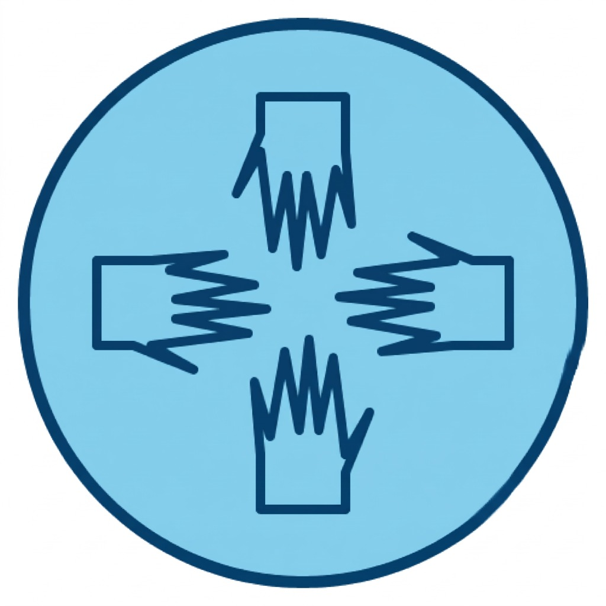

<!DOCTYPE html>
<html lang="zh-Hant">
<head>
<meta charset="utf-8">
<meta name="viewport" content="width=device-width, initial-scale=1, viewport-fit=cover">
<title>NCU Admission Copilot</title>
<link rel="icon" type="image/jpeg" href="./logo.jpg">
<script src="https://cdn.tailwindcss.com/3.4.17"></script>
<script src="https://cdnjs.cloudflare.com/ajax/libs/react/18.3.1/umd/react.production.min.js"></script>
<script src="https://cdnjs.cloudflare.com/ajax/libs/react-dom/18.3.1/umd/react-dom.production.min.js"></script>
<script src="https://cdn.jsdelivr.net/npm/htm@3.1.1/dist/htm.umd.js"></script>
<style>
:root{
  --bg:#F8FAFC;
  --card:#FFFFFF;
  --ink:#0F172A;
  --sub:#64748B;
  --line:#E2E8F0;
  --brand:#1E3A8A;
  --brand-hover:#172554;
  --soft:#F1F5F9;
  box-sizing:border-box;
  padding-top:env(safe-area-inset-top,0px);
  padding-bottom:env(safe-area-inset-bottom,0px);
}
html,body{
  height:100%;
  margin:0;
  font-family:"Inter","Noto Sans TC","Microsoft JhengHei",system-ui,-apple-system,sans-serif;
  background:var(--bg);
  color:var(--ink);
  overflow:hidden;
  -webkit-font-smoothing:antialiased;
  -moz-osx-font-smoothing:grayscale;
}
#root{height:100%}
.card{
  background:var(--card);
  border:1px solid var(--line);
  border-radius:16px;
  box-shadow:0 1px 2px rgba(15,23,42,.04);
}
.card-hover{
  transition:transform .2s cubic-bezier(.16,1,.3,1),box-shadow .2s cubic-bezier(.16,1,.3,1),border-color .2s ease;
}
.card-hover:hover{
  transform:translateY(-2px);
  border-color:#CBD5E1;
  box-shadow:0 8px 20px -6px rgba(15,23,42,.08);
}
.btn-primary{
  background:var(--brand);
  color:#FFFFFF;
  transition:background-color .18s ease,transform .18s cubic-bezier(.16,1,.3,1),box-shadow .18s ease;
}
.btn-primary:hover{
  background:var(--brand-hover);
  transform:translateY(-1px);
  box-shadow:0 4px 12px rgba(30,58,138,.2);
}
.btn-primary:active{
  transform:translateY(0);
}
.nav-glass{
  background:rgba(255,255,255,.82);
  backdrop-filter:blur(12px);
  -webkit-backdrop-filter:blur(12px);
  border-bottom:1px solid var(--line);
}
.sub{color:var(--sub)}
.soft{background:var(--soft)}
.line{border-color:var(--line)}
.cursor::after{content:"▍";animation:b 1s infinite;color:var(--brand)}
@keyframes b{50%{opacity:0}}
.pop{animation:p .24s cubic-bezier(.16,1,.3,1)}
@keyframes p{from{opacity:0;transform:translateY(6px)}to{opacity:1;transform:none}}
.scroll{overflow-y:auto;scrollbar-width:thin;scrollbar-color:#CBD5E1 transparent}
</style>
</head>
<body>
<div id="root"></div>
<script>
/* ================= MOCK DATA（可直接修改文案 / 替換成真實 API）================= */
const MOCK = {
  quick: [
    { k:'A', label:'🏠 住宿分流', q:'請問大一新生宿舍什麼時候申請？一定抽得到嗎？' },
    { k:'B', label:'🎓 獎學金分流', q:'中央大學有哪些新生入學獎學金可以申請？' },
    { k:'C', label:'📋 招生核心問答', q:'申請入學第二階段甄試的審查資料準備指引在哪裡？' },
    { k:'D', label:'🧩 複雜問題轉介', q:'我是特殊選才錄取生，想請問跨系雙主修與抵免學分的特殊規定？' },
  ],
  scenarios: {
    A: { kw:['宿舍','住宿','抽'], intent:'住宿申請', conf:96,
      text:'新生宿舍申請通常於錄取報到後、開學前一個月開放線上登記，名額依抽籤與優先條件（如遠地生、弱勢生）分配，並非保證每人都能抽中。建議關注住宿服務組公告的申請時程，並預先準備備案租屋資訊。此問題屬學務處業務，已為您自動分流至負責單位。',
      source:'中央大學住宿服務組公告 (SharePoint KB)',
      route:{ dept:'學務處 住宿服務組', tag:'已自動分流，無須聯繫招生組', ext:'#57181', mail:'housing@ncu.edu.tw', loc:'學務處大樓 1 樓', url:'https://housing.ncu.edu.tw' } },
    B: { kw:['獎學金','助學'], intent:'獎學金諮詢', conf:94,
      text:'本校提供多項新生入學獎學金，包含入學成績優異獎學金、清寒助學金與各系所／企業捐贈獎學金，申請資格與期程依各項辦法而異。新生輔導與經濟弱勢協助由生活輔導組統一受理，已為您分流至該單位。',
      source:'中央大學生活輔導組獎助學金專區 (SharePoint KB)',
      route:{ dept:'學務處 生活輔導組', tag:'已自動分流，無須聯繫招生組', ext:'#57171', mail:'scholarship@ncu.edu.tw', loc:'學務處大樓 2 樓', url:'https://osa.ncu.edu.tw' } },
    C: { kw:['審查','第二階段','甄試','備審','申請入學'], intent:'招生核心問答', conf:97,
      text:'申請入學第二階段甄試的審查資料，請至招生組網站「申請入學」專區下載「審查資料準備指引」。內容包含各學系指定項目、檔案格式、上傳期限與常見注意事項（例如：PDF 大小限制、學習歷程檔案規範）。此為招生組核心業務，AI 可直接為您解答。',
      source:'中央大學招生組申請入學簡章 (SharePoint KB)', route:null },
    D: { kw:['特殊選才','雙主修','抵免'], intent:'學籍規定／特殊選才', conf:52, low:true,
      text:'此問題涉及個人學籍與系所審查規定，為避免資訊誤差，建議為您轉介承辦單位，由專人確認後回覆。請填寫下方轉介單，系統將自動建立工單並通知承辦人員。',
      source:'中央大學學則與特殊選才辦法 (SharePoint KB)',
      referral:{ dept:'教務處註冊組 / 相關系辦' } },
  },
  fallback: { intent:'一般諮詢', conf:61, low:true,
    text:'感謝您的提問！這個問題我目前沒有足夠的把握直接回答。您可以改問「宿舍」「獎學金」「申請入學審查」等主題，或點擊下方按鈕由專人協助。',
    source:'中央大學招生常見問答集 (SharePoint KB)', referral:{ dept:'招生組 (一般諮詢)' } },
  steps:['正在理解問題意圖...','正在檢索 Microsoft SharePoint 知識庫...','判別對應行政處室...'],
  kpi:[
    { t:'本月總諮詢量', v:'1,284 則', d:'較上月 +18%', up:true },
    { t:'AI 自動解決率', v:'84.2%', d:'較上月 +4.1%', up:true },
    { t:'行政正確分流率', v:'93.5%', d:'較上月 +2.7%', up:true },
    { t:'平均回覆時間', v:'1.4 秒', d:'較上月 -0.6 秒', up:true },
  ],
  routing:[ ['招生組',32,'#2E3A87'],['住宿服務組',18,'#4f6bed'],['生活輔導組',14,'#8aa0ff'],['註冊組',13,'#0f9d8a'],['國際事務處',9,'#f2a93b'],['各系所',14,'#b66dd6'] ],
  trend:{ days:['11/20','11/21','11/22','11/23','11/24','11/25','11/26'], total:[142,168,121,98,203,236,316], ai:[118,141,102,81,171,198,265] },
  tickets:[
    { id:'NCU-2026-088', who:'訪客 #A8F2', sum:'外籍生入學簽證文件詢問', dept:'國際事務處', status:'已通知承辦人', time:'11/26 09:42' },
    { id:'NCU-2026-087', who:'訪客 #B3C9', sum:'轉系與學分抵免資格', dept:'教務處註冊組', status:'處理中', time:'11/25 16:10' },
    { id:'NCU-2026-086', who:'訪客 #D104', sum:'僑生獎學金重複申請規定', dept:'生活輔導組', status:'已結案', time:'11/25 11:27' },
    { id:'NCU-2026-085', who:'訪客 #E77A', sum:'資工系特殊選才審查疑義', dept:'資訊工程學系', status:'處理中', time:'11/24 14:03' },
  ],
  staff:[
    { email:'admin@ncu.edu.tw', pass:'ncu2026', name:'林承辦', dept:'教務處招生組', role:'系統管理員' },
    { email:'housing@ncu.edu.tw', pass:'ncu2026', name:'陳組長', dept:'學務處住宿服務組', role:'處室承辦人' },
  ],
};
/* ================= APP ================= */
const { useState, useEffect, useRef } = React;
const html = htm.bind(React.createElement);
const BRAND='#1E3A8A';
function match(q){ for(const k in MOCK.scenarios){ if(MOCK.scenarios[k].kw.some(w=>q.includes(w))) return MOCK.scenarios[k]; } return MOCK.fallback; }

function RouteCard({r}){ return html`
  <div class="card p-5 mt-3.5 pop border-l-[3px]" style=${{borderLeftColor:BRAND}}>
    <div class="flex items-center justify-between flex-wrap gap-2">
      <div class="font-semibold text-[15px] text-slate-900 flex items-center gap-2"><span>🏛️</span><span>${r.dept}</span></div>
      <span class="text-xs px-2.5 py-1 rounded-full bg-emerald-50 text-emerald-700 border border-emerald-200/70 font-medium">✓ ${r.tag}</span>
    </div>
    <div class="grid grid-cols-1 sm:grid-cols-3 gap-3 text-[13px] mt-4 pt-3.5 border-t border-slate-100 sub">
      <div class="flex items-center gap-1.5"><span>📞</span><span>分機</span><b class="text-slate-900 font-medium">${r.ext}</b></div>
      <div class="flex items-center gap-1.5 truncate"><span>✉️</span><b class="text-slate-900 font-medium truncate">${r.mail}</b></div>
      <div class="flex items-center gap-1.5"><span>📍</span><b class="text-slate-900 font-medium">${r.loc}</b></div>
    </div>
    <a href=${r.url} onClick=${e=>e.preventDefault()} class="inline-flex items-center gap-1.5 mt-4 text-xs font-medium px-3.5 py-2 rounded-xl btn-primary">前往官方網頁 ↗</a>
  </div>`; }

function ReferralForm({dept,onSubmit}){
  const [f,setF]=useState({name:'',email:'',desc:''}); const [done,setDone]=useState(false);
  const inp='w-full rounded-xl border border-slate-200 bg-slate-50/70 px-3.5 py-2.5 text-sm text-slate-900 placeholder:text-slate-400 focus:bg-white focus:border-[#1E3A8A] focus:ring-2 focus:ring-[#1E3A8A]/10 outline-none transition';
  if(done) return html`<div class="card p-5 mt-3.5 pop text-sm text-slate-700 flex items-center gap-2.5 border-emerald-200 bg-emerald-50/40"><span class="text-base">✅</span><span>轉介單已送出，承辦人員將於 1 個工作日內與您聯繫。</span></div>`;
  return html`<div class="card p-5 mt-3.5 pop">
    <div class="font-semibold text-[15px] text-slate-900 mb-3.5 flex items-center gap-2"><span>📨</span><span>人工轉介表單</span></div>
    <div class="grid grid-cols-1 sm:grid-cols-2 gap-3">
      <input class=${inp} placeholder="稱呼（選填，預設匿名）" value=${f.name} onInput=${e=>setF({...f,name:e.target.value})}/>
      <input class=${inp} placeholder="聯絡 Email（供承辦人員回覆）" value=${f.email} onInput=${e=>setF({...f,email:e.target.value})}/>
      <div class="sm:col-span-2 text-xs text-slate-600 bg-slate-50 border border-slate-200/70 rounded-xl px-3.5 py-2.5">目標處室（系統自動帶入）：<b class="text-slate-900 font-semibold">${dept}</b></div>
      <textarea class="${inp} sm:col-span-2" rows="2" placeholder="問題描述" value=${f.desc} onInput=${e=>setF({...f,desc:e.target.value})}></textarea>
    </div>
    <button class="mt-4 text-sm font-medium px-4 py-2 rounded-xl btn-primary"
      onClick=${()=>{ onSubmit({who:f.name.trim()||'訪客 #9F3C',sum:f.desc||'特殊選才跨系雙主修與學分抵免規定',dept}); setDone(true); }}>送出轉介單</button>
  </div>`; }

function BotMsg({sc,onSubmit,tick}){
  const [step,setStep]=useState(0); const [n,setN]=useState(-1);
  useEffect(()=>{ const t1=setTimeout(()=>setStep(1),400), t2=setTimeout(()=>setStep(2),800), t3=setTimeout(()=>setN(0),1200); return()=>{clearTimeout(t1);clearTimeout(t2);clearTimeout(t3)}; },[]);
  useEffect(()=>{ if(n<0) return; if(n>=sc.text.length){tick();return;} const t=setTimeout(()=>{setN(n+2);tick()},22); return()=>clearTimeout(t); },[n]);
  const done=n>=sc.text.length;
  if(n<0) return html`<div class="card px-4 py-3 text-sm sub inline-flex items-center gap-2.5 pop"><span class="w-2 h-2 rounded-full bg-[#1E3A8A] animate-pulse"></span><span>${MOCK.steps[step]}</span></div>`;
  return html`<div class="max-w-[90%] sm:max-w-[82%]">
    <div class="flex flex-wrap gap-2 mb-2 text-xs">
      <span class="px-2.5 py-1 rounded-full bg-slate-100 text-slate-700 border border-slate-200/80 font-medium">意圖辨識：${sc.intent}</span>
      <span class=${'px-2.5 py-1 rounded-full border font-medium '+(sc.low?'bg-amber-50 text-amber-700 border-amber-200/80':'bg-emerald-50 text-emerald-700 border-emerald-200/80')}>信心度：${sc.conf}%${sc.low?' · 建議由專人確認':''}</span>
    </div>
    <div class=${'card px-5 py-4 text-[15px] leading-relaxed text-slate-800 '+(done?'':'cursor')}>${sc.text.slice(0,n)}</div>
    ${done&&html`<div class="pop">
      <span class="inline-flex items-center gap-1.5 mt-2.5 text-xs px-3 py-1.5 rounded-lg bg-slate-50 border border-slate-200/80 sub cursor-pointer hover:bg-slate-100 transition-colors">📄 資料來源：${sc.source}</span>
      ${sc.route&&html`<${RouteCard} r=${sc.route}/>`}
      ${sc.referral&&html`<${ReferralForm} dept=${sc.referral.dept} onSubmit=${onSubmit}/>`}
    </div>`}
  </div>`; }

function Chat({onTicket}){
  const [msgs,setMsgs]=useState([]); const [q,setQ]=useState(''); const end=useRef(null);
  const tick=()=>end.current&&end.current.scrollIntoView({block:'end'});
  const send=t=>{ t=t.trim(); if(!t) return; const sc=match(t); setMsgs(m=>[...m,{r:'u',t,id:Date.now()},{r:'b',sc,id:Date.now()+1}]); setQ(''); setTimeout(tick,50); };
  return html`<div class="h-full flex flex-col max-w-4xl mx-auto w-full px-4 sm:px-6">
    <div class="flex-1 scroll py-6 space-y-5">
      ${msgs.length===0&&html`<div class="text-center pt-10 sm:pt-14 pb-6 pop max-w-xl mx-auto">
        
        <h1 class="text-2xl sm:text-3xl font-bold tracking-tight text-slate-900 mt-5">你好，我是 NCU Admission Copilot</h1>
        <p class="sub text-[15px] leading-relaxed mt-2.5">中央大學智慧招生諮詢助理——自動回答招生問題，並將行政業務分流至正確處室。</p></div>`}
      ${msgs.map(m=>m.r==='u'
        ?html`<div key=${m.id} class="flex justify-end pop"><div class="text-white px-4.5 py-3 rounded-2xl rounded-br-md max-w-[78%] text-[15px] leading-relaxed shadow-sm" style=${{background:BRAND}}>${m.t}</div></div>`
        :html`<div key=${m.id} class="flex"><${BotMsg} sc=${m.sc} onSubmit=${onTicket} tick=${tick}/></div>`)}
      <div ref=${end}></div>
    </div>
    <div class="pb-5 pt-2">
      <div class="grid grid-cols-1 sm:grid-cols-2 lg:grid-cols-4 gap-2.5 mb-3">
        ${MOCK.quick.map(p=>html`<button key=${p.k} onClick=${()=>send(p.q)} class="card card-hover p-3.5 text-left text-sm">
          <div class="font-semibold text-[13px] mb-1" style=${{color:BRAND}}>${p.label}</div><div class="sub text-xs leading-relaxed line-clamp-2">${p.q}</div></button>`)}
      </div>
      <div class="card flex items-center gap-2 p-2 pl-4 focus-within:border-[#1E3A8A]/60 focus-within:ring-4 focus-within:ring-[#1E3A8A]/5 transition-all">
        <input class="flex-1 bg-transparent outline-none py-2 text-[15px] text-slate-900 placeholder:text-slate-400" placeholder="輸入您的問題，例如：宿舍、獎學金、申請入學…" value=${q} onInput=${e=>setQ(e.target.value)} onKeyDown=${e=>e.key==='Enter'&&send(q)}/>
        <button onClick=${()=>send(q)} class="btn-primary text-sm font-medium px-5 py-2.5 rounded-xl shrink-0">送出 ➤</button>
      </div>
    </div></div>`; }

function Donut(){
  const tot=MOCK.routing.reduce((a,b)=>a+b[1],0); let acc=0; const R=70,C=2*Math.PI*R;
  return html`<div class="flex flex-col sm:flex-row items-center gap-6">
    <svg viewBox="0 0 200 200" width="184" height="184" class="shrink-0"><g transform="rotate(-90 100 100)">
      ${MOCK.routing.map(([n,v,c])=>{const len=v/tot*C; const el=html`<circle key=${n} cx="100" cy="100" r=${R} fill="none" stroke=${c} stroke-width="28" stroke-dasharray=${len+' '+(C-len)} stroke-dashoffset=${-acc}/>`; acc+=len; return el;})}</g>
      <text x="100" y="96" text-anchor="middle" font-size="12" fill="#64748B">招生組僅</text>
      <text x="100" y="120" text-anchor="middle" font-size="22" font-weight="700" fill="#0F172A">${MOCK.routing[0][1]}%</text></svg>
    <div class="text-sm space-y-2 w-full sm:w-auto flex-1">${MOCK.routing.map(([n,v,c])=>html`<div key=${n} class="flex items-center gap-2.5 text-slate-700"><i style=${{background:c}} class="w-2.5 h-2.5 rounded-full inline-block shrink-0"></i><span>${n}</span><b class="ml-auto pl-4 font-semibold text-slate-900 tabular-nums">${v}%</b></div>`)}</div></div>`; }

function Trend(){
  const {days,total,ai}=MOCK.trend, W=520,H=200,max=340, bw=24, step=W/days.length;
  const y=v=>H-v/max*H;
  const pts=ai.map((v,i)=>`${i*step+step/2},${y(v)}`).join(' ');
  return html`<div><svg viewBox=${`0 0 ${W} ${H+28}`} class="w-full">
    ${[0,100,200,300].map(g=>html`<g key=${g}><line x1="0" x2=${W} y1=${y(g)} y2=${y(g)} stroke="#E2E8F0" stroke-dasharray="3 3"/><text x="0" y=${y(g)-4} font-size="10" fill="#94A3B8">${g}</text></g>`)}
    ${total.map((v,i)=>html`<rect key=${i} x=${i*step+step/2-bw/2} y=${y(v)} width=${bw} height=${H-y(v)} rx="5" fill="#CBD5E1"/>`)}
    <polyline points=${pts} fill="none" stroke=${BRAND} stroke-width="2.5" stroke-linecap="round" stroke-linejoin="round"/>
    ${ai.map((v,i)=>html`<circle key=${i} cx=${i*step+step/2} cy=${y(v)} r="4" fill="#FFFFFF" stroke=${BRAND} stroke-width="2.5"/>`)}
    ${days.map((d,i)=>html`<text key=${d} x=${i*step+step/2} y=${H+18} text-anchor="middle" font-size="11" fill="#64748B">${d}</text>`)}</svg>
    <div class="flex gap-5 text-xs sub mt-2 pt-2 border-t border-slate-100"><span class="inline-flex items-center gap-1.5"><span class="w-2.5 h-2.5 rounded-sm bg-slate-300 inline-block"></span>諮詢量</span><span class="inline-flex items-center gap-1.5 font-medium" style=${{color:BRAND}}><span class="w-2.5 h-2.5 rounded-full inline-block" style=${{background:BRAND}}></span>AI 自動解決</span></div></div>`; }

function StaffLogin({onLogin,onBack}){
  const [email,setEmail]=useState(''); const [pass,setPass]=useState(''); const [err,setErr]=useState('');
  const inp='w-full rounded-xl border border-slate-200 bg-slate-50/70 px-3.5 py-2.5 text-sm text-slate-900 placeholder:text-slate-400 focus:bg-white focus:border-[#1E3A8A] focus:ring-2 focus:ring-[#1E3A8A]/10 outline-none transition';
  const submit=()=>{
    const u=MOCK.staff.find(s=>s.email===email.trim()&&s.pass===pass);
    if(!u){ setErr('帳號或密碼錯誤，請使用校內授權帳號登入'); return; }
    setErr(''); onLogin(u);
  };
  return html`<div class="h-full scroll flex items-center justify-center px-4 py-8">
    <div class="card w-full max-w-md p-6 sm:p-8 pop">
      <div class="w-11 h-11 rounded-2xl bg-slate-100 border border-slate-200/80 flex items-center justify-center text-xl mb-4">🔐</div>
      <h2 class="text-xl font-bold tracking-tight text-slate-900">工作人員身分驗證</h2>
      <p class="text-xs sub leading-relaxed mt-1.5">行政數據儀表板與人工轉介工單僅限校內授權人員存取，免另行註冊，請使用校內帳號登入。</p>
      <button onClick=${()=>onLogin(MOCK.staff[0])} class="w-full mt-5 py-2.5 px-4 rounded-xl text-sm font-medium btn-primary flex items-center justify-center gap-2">
        <span>🪟</span><span>使用 NCU Portal / Microsoft 365 單一登入</span>
      </button>
      <div class="flex items-center gap-3 my-5 text-xs text-slate-400"><div class="flex-1 h-px bg-slate-200"></div><span>或使用校內 Email 登入</span><div class="flex-1 h-px bg-slate-200"></div></div>
      <div class="space-y-3">
        <div><label class="block text-xs font-medium text-slate-700 mb-1">校內信箱</label>
          <input class=${inp} placeholder="admin@ncu.edu.tw" value=${email} onInput=${e=>{setEmail(e.target.value);setErr('')}} onKeyDown=${e=>e.key==='Enter'&&submit()}/></div>
        <div><label class="block text-xs font-medium text-slate-700 mb-1">密碼</label>
          <input type="password" class=${inp} placeholder="請輸入密碼" value=${pass} onInput=${e=>{setPass(e.target.value);setErr('')}} onKeyDown=${e=>e.key==='Enter'&&submit()}/></div>
        ${err&&html`<div class="text-xs text-red-600 bg-red-50 border border-red-200/80 rounded-xl px-3 py-2">${err}</div>`}
        <button onClick=${submit} class="w-full py-2.5 px-4 rounded-xl text-sm font-medium text-slate-800 bg-slate-100 hover:bg-slate-200/80 border border-slate-200 transition-colors">登入行政後台</button>
      </div>
      <div class="mt-5 p-3 rounded-xl bg-slate-50 border border-slate-200/70 text-[11px] sub space-y-1">
        <div class="font-semibold text-slate-700">測試用工作人員帳號（原型展示）：</div>
        <div>招生組：<code>admin@ncu.edu.tw</code> / 密碼：<code>ncu2026</code></div>
        <div>住宿組：<code>housing@ncu.edu.tw</code> / 密碼：<code>ncu2026</code></div>
      </div>
      <button onClick=${onBack} class="w-full mt-4 text-xs sub hover:text-slate-900 transition-colors">← 返回考生智慧諮詢（前台）</button>
    </div></div>`; }

function Dashboard({tickets,staff,onLogout,onExport}){
  const sc={'已通知承辦人':'bg-slate-100 text-slate-700 border-slate-200','處理中':'bg-amber-50 text-amber-700 border-amber-200/80','已結案':'bg-emerald-50 text-emerald-700 border-emerald-200/80'};
  const kpi=MOCK.kpi;
  return html`<div class="h-full scroll"><div class="max-w-7xl mx-auto px-4 sm:px-6 py-6 space-y-5">
    <div class="flex flex-wrap items-center justify-between gap-3">
      <div><h2 class="text-xl font-bold tracking-tight text-slate-900">行政數據儀表板</h2><div class="text-xs sub mt-0.5">Powered by Microsoft Power BI 概念展示 · 資料更新：2026/11/26</div></div>
      <div class="flex flex-wrap items-center gap-2.5">
        <div class="flex items-center gap-2 text-xs bg-white border border-slate-200 rounded-xl px-3 py-2 text-slate-700">
          <span class="w-2 h-2 rounded-full bg-emerald-500"></span>
          <span class="font-medium text-slate-900">${staff.name}</span>
          <span class="sub">· ${staff.dept}</span>
        </div>
        <button onClick=${onExport} class="text-sm font-medium text-slate-700 bg-white border border-slate-200 rounded-xl px-4 py-2 hover:bg-slate-50 hover:border-slate-300 transition-all shadow-xs">⬇ 匯出報表 (CSV)</button>
        <button onClick=${onLogout} class="text-sm font-medium text-slate-600 bg-slate-100 border border-slate-200/80 rounded-xl px-3.5 py-2 hover:bg-slate-200/70 hover:text-slate-900 transition-all">登出</button>
      </div></div>
    <div class="grid grid-cols-1 sm:grid-cols-2 lg:grid-cols-4 gap-4">${kpi.map(k=>html`<div key=${k.t} class="card p-5"><div class="text-xs font-medium uppercase tracking-wider sub">${k.t}</div><div class="text-3xl font-bold tracking-tight text-slate-900 mt-2 tabular-nums">${k.v}</div><div class="inline-flex items-center gap-1 text-xs font-medium text-emerald-700 bg-emerald-50 border border-emerald-200/70 px-2 py-0.5 rounded-full mt-2.5">▲ ${k.d}</div></div>`)}</div>
    <div class="grid grid-cols-1 lg:grid-cols-2 gap-4">
      <div class="card p-6"><div class="font-semibold text-[15px] text-slate-900 mb-4">各行政處室分流佔比</div><${Donut}/></div>
      <div class="card p-6"><div class="font-semibold text-[15px] text-slate-900 mb-4">近 7 日諮詢量 vs. AI 自動解決</div><${Trend}/></div></div>
    <div class="card overflow-hidden"><div class="flex items-center justify-between px-6 py-4 border-b border-slate-100"><div class="font-semibold text-[15px] text-slate-900">最新人工轉介工單紀錄 <span class="text-xs sub font-normal ml-1">（Power Automate 同步）</span></div><span class="text-xs font-medium text-slate-600 bg-slate-100 border border-slate-200/70 px-3 py-1 rounded-full">工單總數 <b class="text-slate-900">${tickets.length}</b></span></div>
      <div class="overflow-x-auto"><table class="w-full text-sm"><thead class="bg-slate-50/80 text-xs sub text-left"><tr>${['工單編號','訪客代碼（匿名）','問題摘要','指派處室','處理狀態','建立時間'].map(h=>html`<th key=${h} class="py-3 px-6 font-medium whitespace-nowrap">${h}</th>`)}</tr></thead>
      <tbody>${tickets.map(t=>html`<tr key=${t.id} class=${'border-t border-slate-100 transition-colors hover:bg-slate-50/70 '+(t.isNew?'bg-blue-50/30':'')}>
        <td class="py-3.5 px-6 font-mono text-xs text-slate-700 whitespace-nowrap">${t.id} ${t.isNew&&html`<span class="ml-1.5 text-[10px] font-sans font-semibold bg-[#1E3A8A] text-white px-1.5 py-0.5 rounded">NEW</span>`}</td><td class="py-3.5 px-6 font-mono text-xs text-slate-600 whitespace-nowrap">${t.who}</td><td class="py-3.5 px-6 text-slate-700 min-w-[200px]">${t.sum}</td><td class="py-3.5 px-6 text-slate-700 whitespace-nowrap">${t.dept}</td>
        <td class="py-3.5 px-6 whitespace-nowrap"><span class=${'px-2.5 py-1 rounded-full text-xs font-medium border '+sc[t.status]}>${t.status}</span></td><td class="py-3.5 px-6 sub text-xs whitespace-nowrap">${t.time}</td></tr>`)}</tbody></table></div></div>
  </div></div>`; }

function App(){
  const [view,setView]=useState('chat'); const [tickets,setTickets]=useState(MOCK.tickets); const [toast,setToast]=useState(null); const [staff,setStaff]=useState(null);
  const show=m=>{setToast(m);setTimeout(()=>setToast(null),4500)};
  const addTicket=({who,sum,dept})=>{ const id='NCU-2026-089'; setTickets(t=>[{id,who,sum,dept,status:'已通知承辦人',time:'11/26 剛剛',isNew:true},...t.filter(x=>x.id!==id)]);
    show(`⚡ 已透過 Microsoft Power Automate 建立工單 #${id}，並自動發送 Teams/Email 通知予承辦人員`); };
  const tab=(v,l)=>html`<button onClick=${()=>setView(v)} class=${'px-3.5 py-1.5 rounded-lg text-xs sm:text-sm transition-all '+(view===v?'bg-white font-semibold shadow-sm':'text-slate-600 hover:text-slate-900')} style=${view===v?{color:BRAND}:{}}>${l}</button>`;
  return html`<div class="h-full flex flex-col">
    <header class="sticky top-0 z-30 nav-glass flex flex-wrap items-center justify-between gap-3 px-4 sm:px-6 py-3 shrink-0">
      <div class="flex items-center gap-3"><div><div class="font-bold text-[15px] tracking-tight text-slate-900 leading-tight">NCU Admission Copilot</div><div class="text-[11px] sub hidden md:block">中央大學智慧招生諮詢與行政分流系統</div></div></div>
      <div class="flex gap-1 bg-slate-100/90 border border-slate-200/80 p-1 rounded-xl">${tab('chat','考生智慧諮詢（前台）')}${tab('dash',(staff?'':'🔒 ')+'行政數據儀表板（Power BI 視角）')}</div></header>
    <main class="flex-1 min-h-0">${view==='chat'
      ?html`<${Chat} onTicket=${addTicket}/>`
      :(staff
        ?html`<${Dashboard} tickets=${tickets} staff=${staff} onLogout=${()=>{setStaff(null);setView('chat');show('已登出工作人員帳號')}} onExport=${()=>show('✅ 報表匯出成功：ncu-admission-report-2026-11.csv')}/>`
        :html`<${StaffLogin} onLogin=${u=>{setStaff(u);show('🔓 歡迎登入：'+u.name+'（'+u.dept+'）')}} onBack=${()=>setView('chat')}/>`)}</main>
    ${toast&&html`<div class="fixed top-16 right-6 max-w-sm card p-4 text-sm text-slate-800 pop z-50 border-l-[3px] shadow-lg" style=${{borderLeftColor:'#059669'}}>${toast}</div>`}
  </div>`; }
ReactDOM.createRoot(document.getElementById('root')).render(html`<${App}/>`);
</script>
</body>
</html>